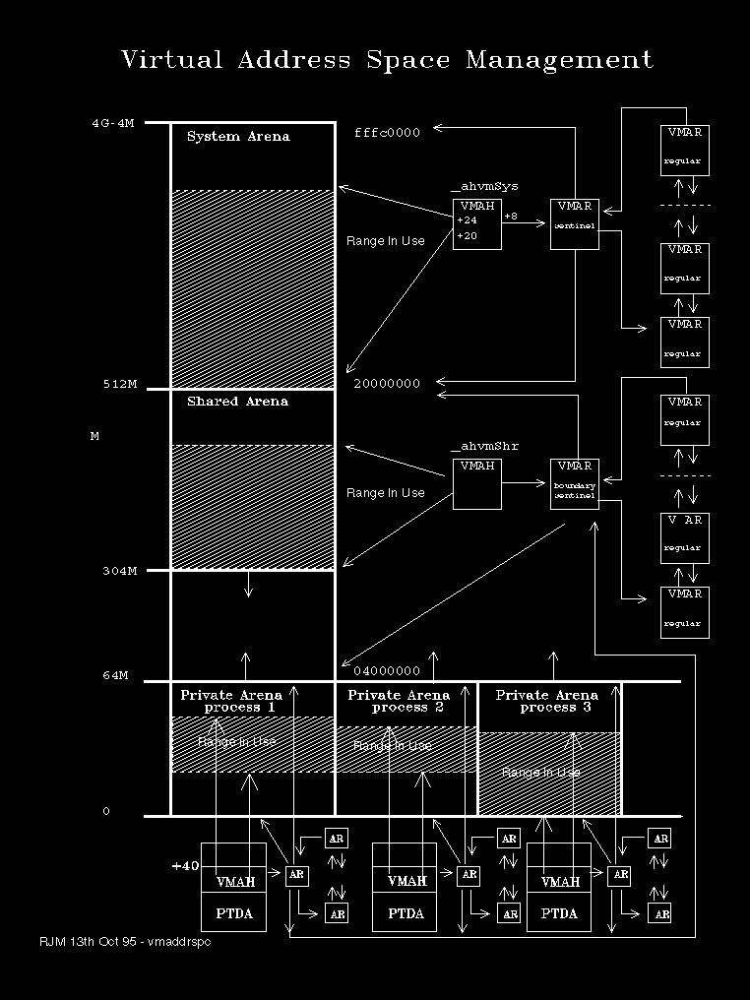

Each of the three types of arena discussed in the previous section is managed by:
An Arena Header Record (VMAH)
A Sentinel Arena Record (VMAR)
The VMAHs are maintained in a double-linked list. They contain information about the extent to which an arena has been used. Of particular interest are the following fields:
In the case of expand down arenas (the shared arena), this is the VMAR for the region of memory allocated above the first free area below the Minimum Read/Write Basing region.
In the case of expand-up arenas (system and private) this is the VMAR for the region of memory allocated just below the lowest free area.
VMAHs are located:
at _ahvmSys for the Shared Arena
at _ahvmhShr for the High Memory System Arena
at _ahvmShr for the System Arena
imbedded at +0x40 in each PTDA for Private Arenas
Arena Records (VMARs) are used to describe virtual storage reservations. These are described in more detail in Virtual Memory Arena Records, below.
A special form of the VMAR is the Sentinel Arena Record. This serves two purposes:
To track the theoretical size limits of an Arena
To act as the head to a double-linked list of Regular VMARs, each of which describes a specific allocation.
The sentinel VMAR for the Shared Arena is called the Boundary Sentinel, since it determines where the (dynamic) boundary between shared an private arenas lies. The boundary is adjusted to reflect the current highest private arena address.
The manner in which VMARs and VMAHs are organised to manage the three types of arena is shown in the following diagram: 